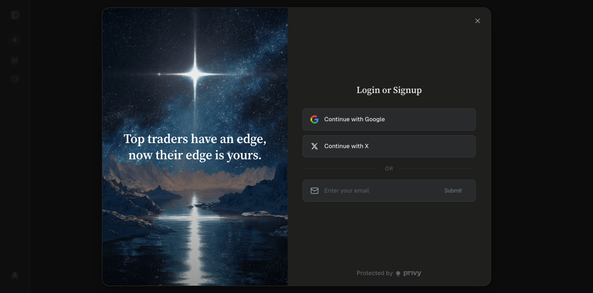

HypeTerminal as the agentic execution harness for Hyperliquid
Deep product placement research on TrueNorth, Hyperliquid-native agents, open-source trading harnesses, MCP rails, and the UX primitives needed to make agent-assisted trading useful without hiding execution risk.
Kami design systemTabbed HTML briefMulti-agent verifiedNo investment advice
Core thesis: TrueNorth is moving toward a broad chat-led agentic brokerage. HypeTerminal should take the sharper position: the transparent, Hyperliquid-native workbench where agents research, simulate, stage, explain, and execute only inside deterministic risk envelopes.
5
parallel research tracks: TrueNorth, Hyperliquid infrastructure, open-source harnesses, competitors, UX and safety.
0.1%
maximum Hyperliquid perps builder fee under official builder-code rules, subject to user approval.
1 key
agent wallet per strategy process should be the default to avoid nonce collisions and replay hazards.
The highest-leverage product is not a generic "AI trading bot." The wedge is a Hyperliquid-native agent harness where the terminal is the trusted operator surface and agents are bounded workers.
What Claude Code is to Opus, HypeTerminal can be to Hyperliquid: the professional harness that gives a powerful substrate memory, tools, guardrails, review surfaces, and a workflow users can trust.
1. Execution-first differentiation
TrueNorth's public surface is chat-led and agentic. HypeTerminal already has the stronger base for transparent execution: chart, orderbook, positions, order validation, full Hyperliquid hooks, mobile sync, and agent-wallet signing. The AI should wrap that base, not replace it.
2. Harness over alpha claims
Competitors can claim AI alpha cheaply. Durable value comes from the workflow around the trade: data provenance, simulation, risk budgets, exact order intent, approval, execution logs, reconciliation, and post-trade learning.
3. Builder economics fit the product
Hyperliquid builder codes give the terminal a native way to monetize fills. That only works if users trust the terminal with execution. Transparency, safety, and agent-wallet lifecycle UX become revenue infrastructure.
Recommended product position: "The agentic trading workbench for Hyperliquid power users: research agents, strategy labs, risk gates, and one-click supervised execution from the terminal."
Product North Star
1
Ask
User asks for a trade setup, hedge, scan, copy target, or strategy test.
2
Research
Agents gather market, account, funding, orderflow, wallet, and external signal evidence.
3
Constrain
Deterministic risk engine computes allowed actions, max notional, leverage, slippage, and liquidation buffer.
4
Stage
The system creates exact Hyperliquid order intents with fees, margin impact, and failure cases.
5
Approve
User reviews, simulates, signs, submits, monitors, pauses, cancels, or flattens.
What To Avoid
Bad wedge
Why it is weak
Better HypeTerminal wedge
Prompt-to-order chat box
Easy to copy, high liability, poor execution clarity.
Intent composer plus exact order-ticket preview and deterministic risk gates.
Persona agents that "think like famous investors"
Feels fun, but it is hard to validate and weakly mapped to perps execution.
Overfit and misleading, especially in perps with funding, slippage, latency, and liquidation paths.
Backtest report cards with assumptions, data windows, fill model, fees, funding, and paper-trade follow-up.
Autonomous bot marketplace first
Performance stats are gameable, strategies crowd quickly, and regulatory risk rises.
Strategy lab first. Let strategies graduate into marketplace only after auditability and live evidence exist.
Verified Evidence
This tab separates facts observed from public sources, sub-agent verification, browser inspection, and local repo inspection. Claims about login-gated execution remain marked as unverified.
TrueNorth
Public product cues
Landing page positioning: "The first Agentic Brokerage" and "Build your own professional trading desk."
Docs describe an "AI TradingView" and "Claude Code for traders" pattern: chat, memory, market scanners, asset deep dives, playbooks, and MCP tools.
Public MCP/tool listings appear focused on market intelligence, not direct wallet or transfer operations.
Execution appears claimed in public social mirrors and implemented behind login, but this was not authenticated or tested.
Observed app state
The unauthenticated app opens to a login/signup modal with Google, X, and email. Browser inspection could not verify post-login trade flow, order preview, risk controls, or autonomy boundaries.
Local screenshot captured during this research:

TrueNorth app access is login-gated, so execution UX and guardrails remain unverified from public inspection.
Hyperliquid Infrastructure Facts
Area
Verified fact
Harness implication
Agent/API wallets
API wallets are also called agent wallets. They sign for a master account or subaccount, but account queries use the master/subaccount address.
Show signer and trading account separately in every approval ticket.
Nonce model
Nonces are tracked per signer. One API wallet across multiple processes or subaccounts shares a nonce set.
Default to one agent wallet per strategy process and subaccount. Build atomic nonce allocation and reconciliation.
Key lifecycle
Deregistered, expired, or unfunded API wallets can have nonce state pruned; docs warn against reusing agent wallet addresses.
Add key rotation, expiry, revocation, and "never reuse this key" warnings.
Builder codes
Users approve max builder fee with the main wallet. Builder needs minimum account value. Max fee is 0.1% perps and 1% spot.
Keep builder approval as explicit human-signed flow. Never hide builder fee in agent execution.
Agents should stage exact native order intent, not a generic "buy" or "sell" instruction.
TWAP
TWAP slices execute every 30 seconds, max 3% slippage, with catch-up limits and no guarantee of full fill.
Show fill uncertainty, completion risk, and live TWAP slice monitoring.
Rate limits
REST IP limit is 1200 weight/min. Exchange actions and address-based action budgets are separate concerns.
Model IP budget, address budget, open-order caps, and websocket subscriptions separately.
WebSocket
Mainnet websocket is available and supports market/user subscriptions such as all mids, L2 book, trades, order updates, user events, fills, and TWAP states.
Use streaming state as primary runtime source; use REST mostly for snapshots and recovery.
CoreWriter
CoreWriter can send HyperEVM actions to HyperCore, but order/vault-transfer write actions have a few-second delay.
Relevant for vault/app architecture, not a low-latency trading shortcut.
Local HypeTerminal Strengths
Existing execution surface
The repo already has Hyperliquid REST/WS clients, signed exchange hooks, order validation, order entry, positions, charting, builder-perp routing, and mobile terminal surfaces.
Agent-wallet base
HypeTerminal already treats agent-wallet signing and mobile agent sync as product concerns, which is directly aligned with the harness wedge.
Reliability work
The codebase contains websocket reliability, soak, staleness, resume, and payload-guard tests. That is unusually relevant for live agent supervision.
Confidence Levels
Claim
Confidence
Reason
TrueNorth is positioning as agentic brokerage
High
Public landing page, docs, and app title align.
TrueNorth has live Hyperliquid execution
Medium
Public claims and bundle signals exist, but flow is login-gated and untested.
Hyperliquid agent wallets and builder codes are the key substrate
High
Verified through official Hyperliquid docs.
Generic AI bot SaaS is crowded
High
Competitor scan shows many bot, copy, marketplace, and agent claims.
Auditable strategy infrastructure is the whitespace
Medium-high
Strong pattern across competitors and safety research, but market demand must be tested with users.
Product Placement Map
The agentic trading category is splitting into seven placements. HypeTerminal should not chase all of them. It should own the Hyperliquid execution workbench, then expand into marketplace and infrastructure after trust is earned.
Tool access for agents, data, wallet actions, swaps, research.
Build HypeTerminal MCP as the trusted gateway to Hyperliquid order staging and account context.
Where HypeTerminal Can Win
1. Execution cockpit
Most agent products emphasize "ask and get an answer." HypeTerminal should emphasize "inspect, constrain, stage, approve, execute, monitor." This is a better fit for perps where liquidation, leverage, funding, and slippage are always part of the trade.
2. Hyperliquid-native depth
Support spot, perps, builder-deployed perps, DEX scope, subaccounts, vault addresses, builder fees, agent wallets, order types, TWAP states, and websocket recovery with first-class UI.
3. Verified strategy evidence
Marketplaces are only useful when users can trust stats. HypeTerminal can make every strategy carry a provenance bundle: version hash, data window, backtest assumptions, paper period, live fills, drawdown, and guardrail history.
4. Safety as product taste
The permanent kill switch, approval queue, risk budget panel, and audit replay should feel like high-end trading infrastructure, not compliance clutter.
Monetization Fit
Model
Fit
Implementation note
Builder-code revenue
Best near-term fit for terminal-assisted execution.
Display builder fee approval, cap, fee impact, and active approval count. Keep user trust ahead of fee maximization.
Pro subscription
Good for alerts, strategy lab, backtests, portfolio analytics, risk budgets, and agent sessions.
Do not gate basic risk visibility. Gate advanced automation and historical simulation depth.
Strategy marketplace take rate
Potentially strong, but should come after audit standards exist.
Require evidence cards and copy-risk constraints before users can follow strategies.
Performance fee
Powerful but legally and operationally sensitive.
Start with transparent builder fees and subscriptions. Add performance fee only with strong jurisdictional review.
B2B infrastructure
Good longer-term path for desks, funds, and builders.
Offer HypeTerminal MCP, audit logs, role permissions, and strategy-run infrastructure.
Competitive Warnings
AI alpha is the least defensible claim. Recent research and market behavior suggest many "agent" products are wrappers around rules, prompts, or APIs. The product should sell workflow quality, not magical model returns.
Copy-trading stats are fragile. Survivorship bias, deposits and withdrawals, leverage, slippage, lag, thin liquidity, and selective disclosure can make leaderboards misleading.
MCP execution increases blast radius. Exposing tools to agents is valuable, but raw trade execution should begin as staged intents plus user approval, not arbitrary remote `place_order` calls.
Harness Architecture
The clean architecture is a deterministic execution spine with agentic research around it. The model may propose, compare, explain, and rank. It should not bypass the risk engine or directly own signed order payloads.
Market/User Snapshot
-> Agent Signal Graph
-> Deterministic Risk Envelope
-> Order Intent
-> Simulation / Dry Run
-> Human Approval or Bounded Policy Approval
-> Hyperliquid Execution
-> Runtime Monitor
-> Audit Timeline and Journal
Follow score, caveats, max allocation recommendation.
Read-only until follow policy is approved.
Portfolio Manager Agent
Signals plus deterministic allowed actions.
Order intents inside limits.
Stage-only by default.
Execution Agent
Approved execution plan, signer, nonce allocator.
Submitted orders, cancels, fills, errors.
Only after approval or bounded policy authorization.
Guardian Agent
Agent runs, policies, live exchange events, anomalies.
Pause, alert, escalation recommendation.
Can pause and cancel according to policy.
Execution Spine Requirements
Nonce and idempotency
One agent wallet per strategy process and subaccount. Always use cloid for order correlation. Persist nonce allocator state and reconcile after reconnect.
Dead-man controls
Use scheduled cancels where appropriate. The UI should clearly distinguish pause agent, cancel open orders, and flatten positions.
Rate budget model
Track REST IP weight, address action budget, open-order caps, websocket subscriptions, and batch effects separately.
State recovery
After disconnect or process restart, rebuild account state from websocket and REST snapshots before allowing live actions.
Execution simulation
Dry-run every order against current book, slippage constraints, fee model, leverage, margin, liquidation buffer, and order type semantics.
Replay-safe key lifecycle
Never reuse old agent wallet addresses. Make expiry, revocation, rotation, and active permissions visible in the terminal.
Backtest Reality Check
For Hyperliquid perps, a serious harness needs venue-realistic backtesting. Daily candles are acceptable for research education, not for execution claims.
Backtest layer
Minimum viable
Professional target
Data
Candles, trades, funding, mark prices, fees.
L2 book replay, order queue model, funding, liquidation, latency, partial fills.
Assumptions
Visible slippage and fee assumptions.
Configurable fill models, spread/depth constraints, missed-fill tracking.
Validation
Out-of-sample split and paper-trading period.
Walk-forward tests, live shadow mode, strategy drift detection.
The UX should feel less like "chatbot attached to a trading app" and more like a professional execution IDE: intent, diff, review, run, monitor, rollback, audit.
Intent before execution
Natural language should compile into structured trade intent. If the instruction is ambiguous, the app should ask targeted questions or show an ambiguity warning instead of guessing.
Risk budget is permanent chrome
Remaining daily loss budget, max drawdown, max leverage, margin utilization, liquidation distance, concentration, and open order risk should always be visible near agent actions.
Approvals show the real payload
The confirmation ticket must show the exact action: account, signer, market, side, size, price, order type, time-in-force, reduce-only, TP/SL, builder fee, and resulting exposure.
Kill switches are never hidden
The user should always be able to pause agent, cancel open orders, flatten positions, disable strategy, and revoke agent wallet. These are different actions and should not be collapsed.
Connects agent suggestions to user learning and strategy improvement.
UX Anti-Patterns
Do not gamify risk
Avoid streaks, badges, celebratory fills, FOMO nudges, push alerts for excitement, or leaderboard defaults that reward leverage and volatility.
Do not summarize away risk
Never let a friendly agent summary be the only approval surface. Users must see actual payload, risk delta, and signer/account details.
Do not make automation sticky
Every automation policy should have expiry, scope, revocation, and evidence requirements. Re-enable after kill switch should require incident review.
Do not hide failed states
Order rejects, stale data, websocket reconnects, partial fills, TWAP misses, rate-limit hits, and guardrail blocks should be explicit timeline events.
Mobile Experience
Mobile should be a supervision surface first, not a casino-like trading surface. Its job is to keep the user aware of risk and let them intervene quickly.
MCP should be the tool layer, not the whole product. HypeTerminal can expose trusted Hyperliquid tools to agents while keeping execution gated by local risk policy and terminal approvals.
Stream agent runs, tool calls, state deltas, and progress into the existing React frontend.
Good for runtime transparency and long-running backtests.
A2UI/component catalog
Let agents request trusted components such as OrderTicket, RiskGauge, BacktestCard, ApprovalQueue.
UI as data, not arbitrary executable UI. Frontend owns components.
MCP Apps/open-ended UI
Useful for experimental analysis widgets.
Avoid for execution surfaces unless sandboxed and non-signing.
Minimum Security Posture
Never expose raw unrestricted trade execution as a default MCP tool. Start with stage, simulate, request approval, and submit approved plan. The approval token should be narrow, expiring, and bound to the exact payload or acceptable diff.
Separate master-wallet flows from agent flows. Agent registration, builder fee approval, withdrawals, transfers, key revocation, and permission changes should require explicit human signing.
Roadmap
The roadmap should preserve trust while increasing autonomy. Start by making the AI useful for research and staging, then graduate toward bounded automation only when auditability and safety are proven.
Phase
Build
Why now
Exit criteria
0. Research artifact
This HTML brief, source inventory, and product thesis.
Aligns the product direction before implementation.
Team can name the wedge, avoid anti-patterns, and prioritize first slice.
Yes. Every policy should have scope, budget, and expiry.
Can copy-trading stats mislead the user?
Assume yes. Show deposits, withdrawals, leverage, drawdown, lag, and slippage caveats.
Source Inventory
Sources include official docs, public product pages, app/browser inspection, local repo inspection, and sub-agent research. Login-gated product details are explicitly marked as unverified.
This artifact is product research and implementation planning material. It is not financial advice, a recommendation to trade, or a claim that any strategy will be profitable.